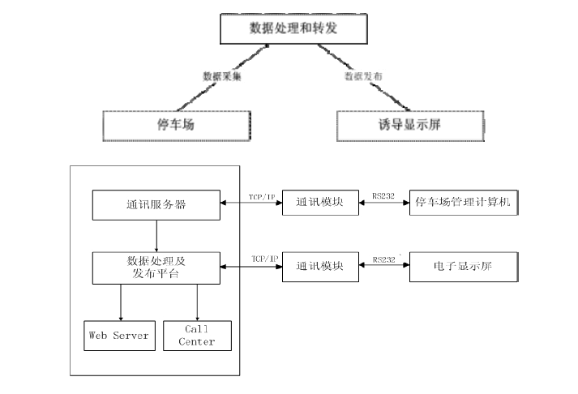
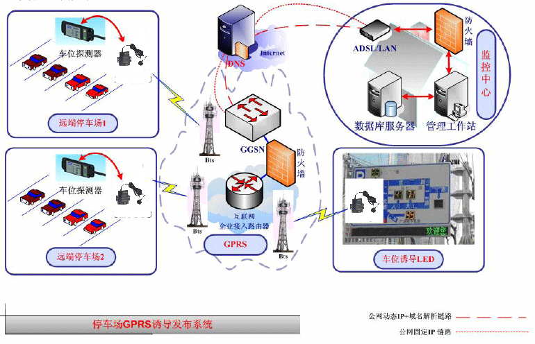

随着经济的持续发展和产业调整，大批人口将向城市转移，城市人口将不断增加，同时，经济活动日趋频繁，商业活动将更加活跃，车的数量和使用频率也将大大增加，对中心城市的交通带来沉重的压力，交通“停车难”日益成为制约我国大中城市经济发展的“瓶颈”。修建新的停车场和交通设施，能部分解决问题，但费用高昂且建设周期长，还受土地使用及城市规划的诸多方面因素的制约。只有在进行硬件设施建设的时候，充分利用现代科学技术，
借助国外交通发展过程中的经验，引入城市停车诱导系统成，从而以软、硬结合的方式，在节省巨大建设费用的同时，更改善“停车难”的状况。
“智能停车诱导系统”主要由以下系统组成：
★无线通信系统
★信息管理系统
★车库管理检测系统
★停车诱导信息发布系统
安装在停车场（库）的车辆检测设备检测进出车库的车流量，经过实时信息处理，用无线通信系统（多对一）传送到信息处理中心，运行于信息处理中心的数据处理及信息管理系统，分析处理经由无线通信系统送达的各个车库停车状况信息，判断各车库的空闲状态，通过无线通信系统（一对多）发送至分布于中心城区内各户外,LED停车诱导信息发布屏，使区域内行驶的每一辆汽车通过LED 停车诱导信息发布屏发布的停车诱导信息的诱导，方便地驶入合适的停车场（库）停放。毫无疑问，“智能停车诱导系统”的研制开发并加以实施，将有效地缓解中心城区道路停车难的问题，最大限度发挥中心城区内各停车场（库）的作用。
系统的通讯网络建设，主要是从网络接入的容量、数据交互的可靠性、建设投资、建设周期、系统的运行费用以及可维护性这几个主要方面进行考虑。管理中心通过专网或Internet 接收和发布数据，建议采用Internet方式，目前的ADSL、宽带接入、DDN 业务都能满足，可针对实际应用情况进行选择。由于诱导显示屏安装在街道旁边，不方便敷设通信电缆，同时需传输采集的数据量也比较小，建议采用无线通讯手段，如中国移动的GPRS网络，实现系统内的数据通讯。
无线通信的方式具有以下优势：
1、技术已经比较成熟；
2、有强大的运营商进行支持，不存在企业风险；
3、费用较其他方式（光纤专线或卫星网络无线数据通信等）低，降低运行成本；
4、建设成本低，不需要开挖路面敷设数据通讯线路；
组网采用多点对一点的方式。将每一个车库的车位数据信息通过中国移动提供的 GPRS 无线网络接入方式发送至信息处理中心，再由信息处理中心处理数据并发布至各级停车诱导系统和ＬＥＤ诱导屏。每个车库先通过ＧＰＲＳ设备将车库信息发往信息中心，信息中心再将处理过的数据通过ＧＰＲＳ通道发往相对应信息发布的ＬＥＤ发布屏；而每个ＬＥＤ发布屏通过ＧＰＲＳ设备来做为数据接收端接收相对应的车库信息。
系统原理：首先通过各停车场的数据采集系统对各停车场的车位相关信息进行采集，并按照一定规则通过数据传输网络将信息送至信息处理系统，由信息处理系统对信息进行分析处理后存放到数据库服务器，同时分送给信息发布屏，提供信息服务。
系统组网图如下：
A、终端设备与GPRS设备的连接
GYC221A 的特点是嵌入了TCP/IP 协议，可以与车库采集器和终端信息发布屏双向全透明连接，无需客户开发接口。停车厂（库）分别配套车位数据采集器，通过RS232接口连接上 GYC221A即可，终端信息显示屏也对应的配带GYC221A。
本公司ＧＰＲＳ产品已经完成了成熟的软件接口开发。包括动态连接库的开发，完善的DEMO程序（包括VC、VB、DELPHI 三种语言），简单快捷的虚拟串口程序。客户使用以上软件经过简单二次开发，即可与中心软件进行数据通讯。
B、GPRS无线网络：采用中国移动公司提供的线路和接口GYC221A 系列产品已经在全国各地移动公司成功应用于各行各业，完全符合移动标准。
C、GPRS无线网络与中心软件的连接（这里可选两种方式）
1．监控中心先向Internet运营商申请ADSL等宽带业务。监控中心采用公网动态IP+DNS解析服务（最好能使用电信固定 IP服务）：客户先与DNS服务商联系开通动态域名，监控点先采用域名寻址方式连接 DNS服务器，再由DNS服务器找到中心公网动态IP，建立连接。此种方式可以大大节约公网固定IP的费用。
2．监控中心先向中国移动申请APN服务。监控中主采用的是中国移动提供的APN专线服务，服务器与下位机采集点都采用同一APN接入名的固定 IP 服务，等同于一个内部的监控系统：下位机与服务器之间是一种局域网的概念，只有同属于同一局域网内才可以做数据传输业务。此种组网方案安全可靠性级别最高，但是费用相对比较高一些。
车位探测器外形小巧，安装方便，快速，灵活。可选择地埋式安装或地表安装。自含式设计，直接输出车辆到位或通过信号，无需外接控制器，接线方便。可以可靠的检测汽车到位，并且不会误检到附近的其他车辆。地磁车辆检测器可进行 6档灵敏度调节，便于设定不同的检测距离。供电后自动进行初始化设置，地磁车辆检测器可记忆此位置的磁场环境，当有汽车等铁磁性物体靠近检测器时，产生地磁扰动信号，检测器便可输出车辆到位或通过信号。
车位探测器需具备特点：
1.可以做到对每个车位的停车情况进行适时的管理；
2.不会因人或者小动物的通过而发生误判断；
3.可根据停车场的屋顶的高度不同来调整检测高度；
4.不会受周围传感器的干扰，每个传感器都有独立的防干扰功能；
5.适用于大型停车场。
停车诱导信息最终需要通过终端LED显示屏显示车库，车位信息。这些信息都是由管理信心中心通过GPRS网络向 LED显示屏配置的GPRS无线传输终端传输数据，完成通信功能，所以在信息发布系统里最重要的就是GPRS终端与LED终端的无缝连接。
1.LED停车诱导信息屏与GPRS终端接口。
停车诱导信息发布屏提供标准232接口与GPRS终端设备相连。
2.LED与GPRS终端的通信。
GPRS终端采用的是全透明的传输方式，波特率可选110-57600之间，即管理中心向GPRS终端发送的数据即是向LED发送的数据是一样的。
车库采集器、无线通信设备、电源、终端显示面板。
车库采集器：可选用具有232通讯接品的计数感应器等传感设备。
无线通信设备：采用石家庄市静远电子科技GYC221A GPRS DTU。